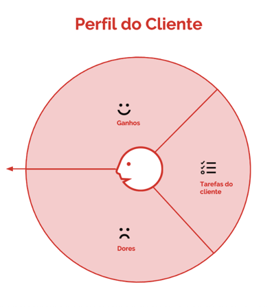
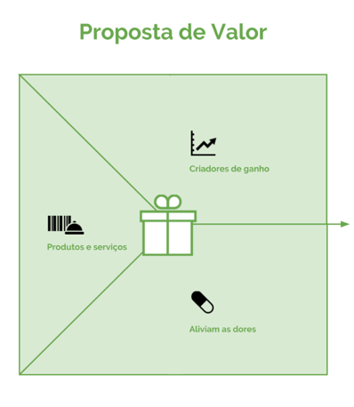

Para Rocha (2018, p. 162), a etapa de prototipação “[...] é o movimento de dar vida às ideias”. Para tanto, é preciso saber se o protótipo que se pretende construir gera valor para seu “cliente”, ou seja, o protótipo que pretende construir gera benefícios ao seu “cliente”?
Para saber se o protótipo que se pretende construir gera benefícios ao “cliente” é necessário elaborar a proposta de valor. Trata-se de uma ferramenta visual, que será alinhada às necessidades do seu “cliente”. Em outra palavras, a ferramenta apresenta as necessidade e desejos do “cliente” e como seu protótipo supre estas necessidades e estes desejos. De forma prática, primeiro são preenchidas as atividades da persona (cliente), os ganhos que ele tem ao fazer as atividades e as dores que ele sente quando estas não são supridas.
Após observação das tarefas executadas pelo nosso “cliente” é necessário propor serviços e produtos para ajudá-lo nesse processo. Isso pode ser feito com os potencializadores de ganhos para aumentar a satisfação do cliente em potencial, e, por fim, os analgésicos para minimizar as dores enfrentadas por ele (Osterwalder; Pigneur, 2011).
Após a conclusão desse processo, deve-se seguir preenchendo o Business Model Canvas . O BMC é uma maneira visual de demonstração como a solução está sendo pensada e como a mesma vai interagir com o mercado externo. A forma recomendada para preenchimento é:

Segmento de clientes; Proposta de Valor; Canais; Relacionamento; Fonte de receita; Recursos chave; Atividades chave; Parceria chave e Estrutura de custos. Para maiores informações sobre Business Model Canvas, dirija seu celular no QR Code abaixo:

Após estes passos é hora do: MVP – O Mínimo Produto Viável
O Mínimo Produto Viável ou MVP é um modo rápido de Prototipar e não requer recursos elevados. O importante é que ele consiga expressar exatamente o que o produto irá executar. Segundo Ries (2019, p. 49), o MVP “[...] é uma versão do produto que permite um giro inteiro no ciclo de costruir-medir-aprender com um mínimo esforço e no menor tempo de desenvolvimento”.
Trata-se de uma versão simplificada da sua solução. Assim o estudante irá CONSTRUIR a solução. Irá MEDIR se a solução atingiu o objetivo proposto e APRENDER com acertos e erros para melhorar a solução.
Se a ideia é ampliar a doação de sangue por um aplicativo, não precisa, inicialmente, criar o aplicativo. Faça o MVP do aplicativo no qual se encontrarão as principais funcionalidades. Por exemplo: ao clicar em um botão específico, ele irá acionar o Hemomar. Porém, o MVP é um só uma tela com o desenho do aplicativo sem acesso ao Hemomar. Por outro lado, ele simula toda a ação para a doação. Lembre-se de que o MVP é uma solução temporária.
Existem diversos tipos de MVP:
- MÁGICO DE OZ
- CONCIERGE
- FUMAÇA
- VÍDEO EXPLICATIVO
- MVP DUPLO
- PROTÓTIPO FÍSICO.
Nessa etapa, alguns critérios devem ser levados em consideração: O cliente vai conseguir interagir com o nosso MVP? É possível coletar aprendizados a partir desse MVP proposto? Há viabilidade técnica para construir esse MVP? Há tempo hábil para sua conclusão?
Para mais informações sobre o MVP, use o QR-CODE abaixo.
Home